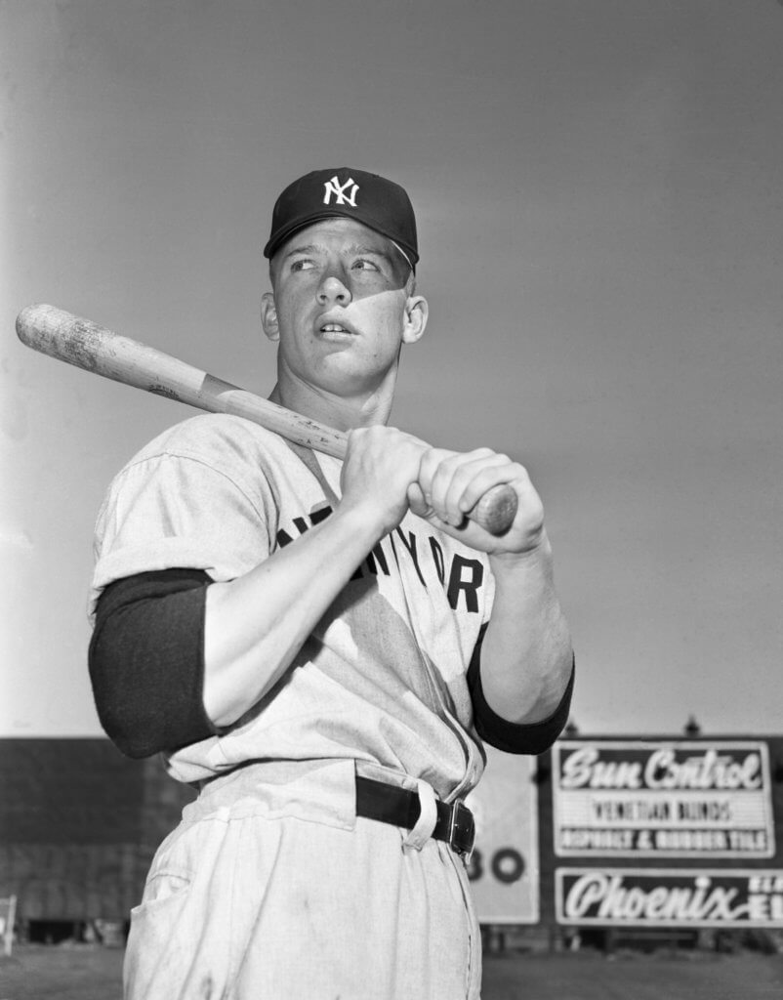
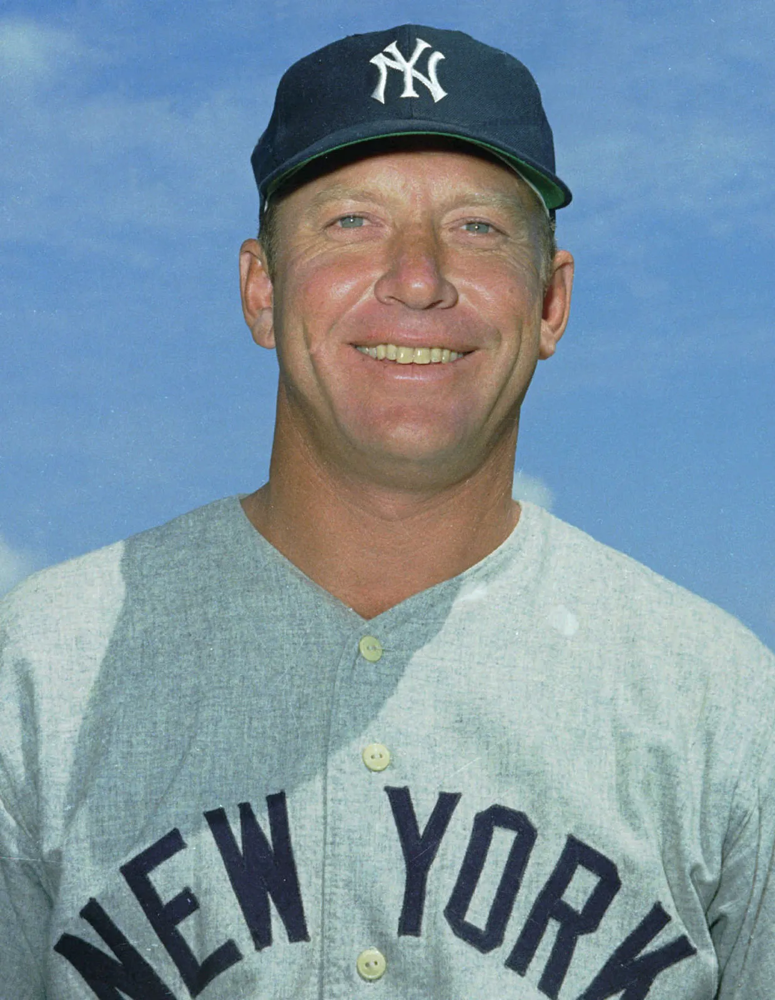
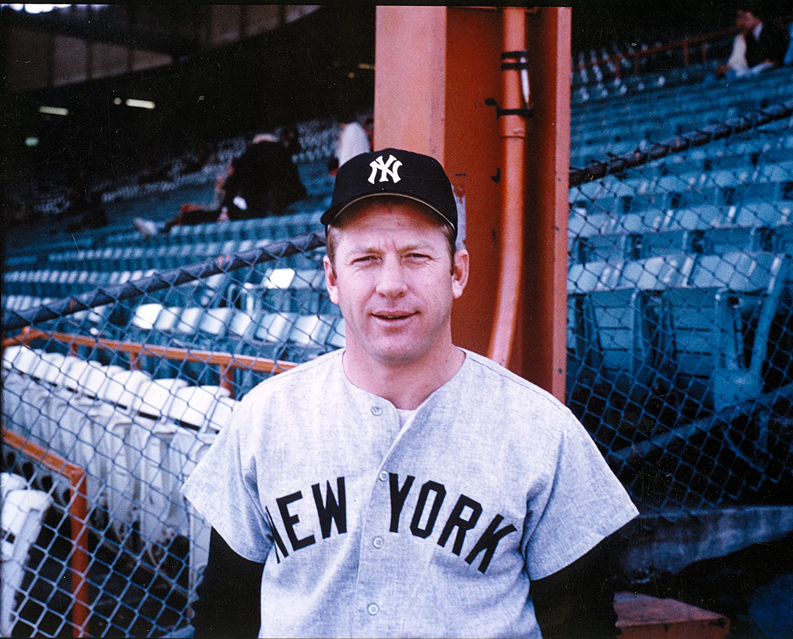

Early Life and Career Beginnings
Mickey Mantle was born on October 20, 1931, in Spavinaw, Oklahoma. Growing up in a small town, Mantle developed a love for baseball at an early age. He attended Commerce High School, where he excelled in multiple sports, but baseball was his true passion. Mantle's exceptional talent caught the attention of scouts, and he was signed by the New York Yankees in 1949.
Major League Debut and Rise to Stardom
Mickey Mantle made his Major League debut with the New York Yankees on April 17, 1951. Over the next two decades, he established himself as one of the most electrifying players in baseball history. Known for his incredible power, speed, and switch-hitting ability, Mantle became a fan favorite and a key figure in the Yankees' dominance during the 1950s and early 1960s. He played a crucial role in leading the team to seven World Series championships (1951, 1952, 1953, 1956, 1958, 1961, and 1962).
Career Highlights and Achievements
Throughout his illustrious career, Mickey Mantle achieved numerous accolades and milestones. He was a 20-time All-Star, won three American League MVP Awards, and secured seven World Series titles. Mantle also won the Triple Crown in 1956, leading the league in batting average, home runs, and RBIs. His legendary home runs, including the longest ever hit at Yankee Stadium, solidified his status as one of the greatest players in baseball history. Mantle's impact on the game and his enduring legacy continue to be celebrated by fans and historians alike.
 Learn more about Mickey Mantle